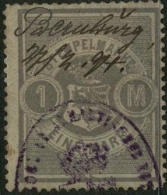
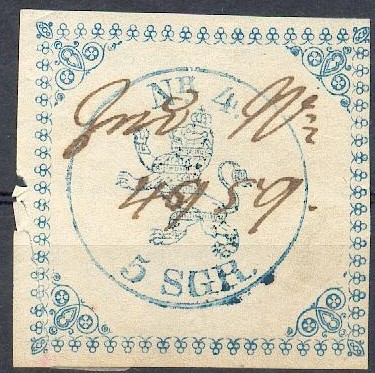
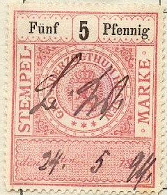

I have also seen the value 100 M brown
Return To Catalogue - German States - Germany overview
Note: on my website many of the
pictures can not be seen! They are of course present in the
catalogue;
contact me if you want to purchase it.
Note: I've not been able to obtain many image of the fiscal stamps of the following states. If anybody posesses pictures, please contact me!
Not all states issued postage stamps. Some of the states and cities only issued fiscal stamps. Examples are:
ANHALT
1885, no country name, inscription 'STEMPELMARKE' (12 values, 10 p to 100 M).

Later issue, 'ANHALT' written slanting in the center:
I have also seen the value 100 M brown
BIRKENFELD
1868-1904 inscription 'STEMPELMARKE' (16 values), sorry no picture available yet.
1910 Inscription 'STEMPELMARKE'
Many values were issued, similar stamps exist for Oldenburg
HESSEN-NASSAU
(Example)
HESSEN-KASSEL
Lion in a circle, 1853

Many different values were issued.
Similar cuts in black with lion in a circle only, reduced sizes
HESSEN-DARMSTADT
1868-1907 many values, inscription 'GROSHERZOGTHUM HESSEN'
1868 Arms in a circle
The following values were issued (value always in
black):
value in 'KREUZER' (1868): 7 k red, 14 k blue and 21 k yellow,
value in 'Pfennig' or 'Mark' (1876): 5 p orange (2 types), 10 p
brown (2 types), 20 p red, (2 types) 20 p orange, 30 p violet, 30
p orange, 40 p blue (2 types), 50 p green (2 types), 60 p yellow
(2 types), 1 M brown (3 types), 2 M grey (3 types), 3 M green (2
types), 4 M red, 4 M brown (2 types), 5 M blue, 5 M yellow (2
types), 6 M yellow (2 types), 10 M red, 20 M blue, 30 M yellow,
40 M brown, 50 M, 60 M yellow and 100 M blue.
1882 issue:
('STEMPEL MARKE GROSHERZOGTHUM HESSEN')
The following values exist (value always in black): 10 M red, 20 M blue, 30 M orange, 40 M olive, 50 M brown and 60 M yellow.
1882 issue, higher values
The following values exist (value always in black): 100 M red, 200 M green and 300 M brown.
1891 Arms in a circle 'STEMPEL-' left, 'MARKE' right

The following values were issued:
With '18' in the bottom right corner: 5 p, 10 p,
20 p, 30 p, 40 p, 50 p, 60 p, 70 p, 80 p, 90 p (all in colour
brown), 1 M, 2 M, 3 M, 4 M, 5 M, 6 M, 7 M, 8 M, 9 M (all in blue
colour), 10 M, 20 M, 30 M, 40 M, 50 M, 60 M (all in yellow
colour, design slightly larger), 100 M, 200 M, 300 M, 500 M (all
in green, design again larger).
With '19' in the bottom right corner (1900): 5
p, 10 p, 20 p, 30 p, 40 p, 50 p, 60 p, 70 p, 80 p, 90 p (all in
colour brown), 1 M, 2 M, 3 M, 4 M, 5 M, 6 M, 7 M, 8 M, 9 M (all
in blue colour), 10 M, 20 M, 30 M, 40 M, 50 M, 60 M (all in
yellow colour, design slightly larger), 100 M, 200 M, 300 M, 500
M, 1000 M (all in green, design again larger), 20000 M, 50000 M
lilac.
I have seen many of these stamps surcharged during the inflation
period; for example
'500000 Mark' on 20 M
'Eine Million Mark' (red) on 9 M (see picture above)
'funf Millionen Mark' on 3 M, 4 M, 5 M, 6 M, 8 M and 9 M,
'Zehn Millionen Mark' on 3 M, 4 M, 5 M , 6 M, 8 M, 9 M,
'Zwanzig Millionen Mark' on 2 M and 3 M,
'hundert Millionen Mark' on 10 M
'Zweihundert Millionen Mark' on 20 M,
'funfhundert Millionen Mark' on 30 M and 40 M
'EINE MILLIARDE MARK' on ? M
'ZWEI MILLIARDEN MARK' on ? M
'10 MILLIARDEN MARK' on 200 M
'20 MILLIARDEN MARK' on 200 M
'50 MILLIARDEN MARK' on 200 M
'500 Milliarden Mark' on 500 M
'EINE BILLION MARK' on 100(?) M
'ZWEI BILLIONEN MARK' on 1000 M
'20 BILLIONEN MARK' on 200 M (see image above)
I have also seen them with the word 'GROSSHERZOGTHUM' crossed out
manually, example:
(Reduced size)
SAXONY-ALTENBURG
1899, inscription 'HERZOGTHUM S. ALTENBURG STEMPELMARKE', 12 values, example:
The following values exist: 10 p, 20 p, 40 p, 50 p (all green, black and brown), 1 M, 1.50 M, 2 M, 5 M, 10 M, 20 M, 50 M and 100 M (all red, black and grey).
SAXONY-COBURG-GOTHA
1868-1896
SCHAUMBURG-LIPPE
1870-1898, inscription 'HERZOGTHUM SCHAUMBURG-LIPPE STEMPEL-MARKE', 12 values
The following values exist: Value in 'Groschen': 1 g red, 2 1/2 g blue and 5 g green; Value in 'Pfennige' or 'Mark': 10 p red, 25 p blue, 50 p green, 1 M brown, 3 M violet, 6 M yellow, 10 M red, 50 M blue and 100 M black.
(Later issue, used in 1929, overprinted 'Eine halbe Goldmark
1/2')
SCHWARZBURG-SONDERHAUSEN
1872-1875, 9 values